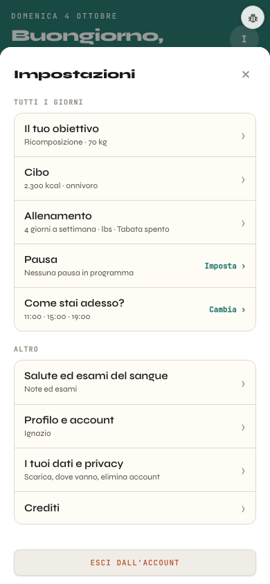

A sinistra la finestra vera con la veste A accesa (banco, 390 px): l'elenco e una pagina interna, «Il tuo obiettivo». A destra lo schizzo con le regole di Home, Seduta, Nutrition e Body. Stessi dati, stessi tasti, stessi passaggi; nessuna logica nuova. Le Impostazioni non sono una zona: prendono l'evergreen dell'app, che è anche il colore della Home, da cui si aprono.
Cosa cambia e perché
La testata evergreen (#2A7A6F, scritte bianche, 5,11:1) in cima al foglio: il titolo a 24 px e la ✕ da 44 px. Nelle pagine interne dentro c'è anche «‹ Impostazioni».
L'elenco come le Impostazioni dell'iPhone: gruppi bianchi (oggi sono crema), titoli di sezione fuori in --t2. Ogni voce ha un quadratino del colore della sua zona: Obiettivo e Cibo, Allenamento, Salute nel viola del Body. Le voci di tutta l'app restano grigie.
«Esci dall'account» diventa un tasto largo bianco con la scritta rossa, staccato dall'elenco.
Nelle pagine interne le etichette sono in --t2, i campi a 16 px, le scelte a griglia alte 44 px, «Salva» a tutta larghezza in evergreen.
Prima · elenco

Dopo · elenco
✕
Impostazioni
Tutti i giorni
◎Il tuo obiettivoRicomposizione · 70 kg›
🍽Cibo2.300 kcal · onnivoro›
⚡Allenamento4 giorni a settimana · lbs · Tabata spento›
⏸PausaNessuna pausa in programmaImposta ›
☀Come stai adesso?11:00 · 15:00 · 19:00Cambia ›
Altro1
✚Salute ed esami del sangueNote ed esami›
👤Profilo e accountIgnazio›
🔒I tuoi dati e privacyScarica, dove vanno, elimina account›
ℹCrediti›
Da snellire nel giro 2
«Veste nuova» in Crediti: ora la veste è accesa per tutti, l'interruttore serve solo a spegnerla. Si può togliere quando la veste di prima non serve più.
In «Il tuo obiettivo» il campo «Peso di oggi» è spento («Si cambia da Pesati ora»): basta il valore scritto, senza il campo.
Quando si costruisce
Tutto dietro html.v5: a veste spenta la finestra resta identica al pixel. La testata va nell'HTML della finestra solo a veste accesa (zona-tracker.html e impostazioni.js, setVai cambia il titolo come oggi); quadratini, gruppi, «Esci» e pagine interne con lo stile. Nessun salvataggio toccato.